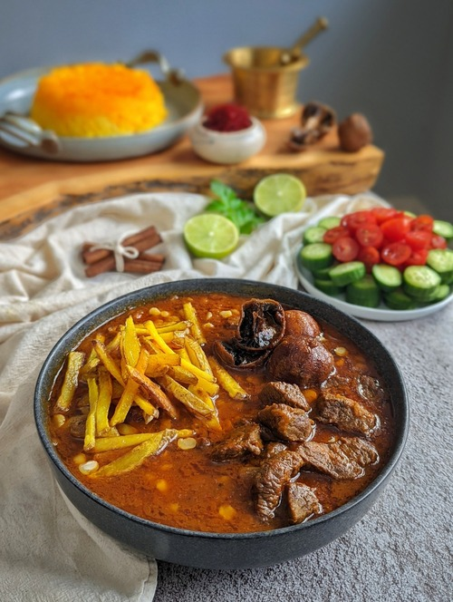

Home
Khoresh Gheymeh

Description
Khoresht Gheymeh is a traditional Persian stew made with tender
lamb or beef, split yellow peas, and a rich
tomato-based sauce.
It is flavored with dried Persian limes (limoo amani), which add a unique tangy taste,
and a blend of fragrant spices like turmeric, cinnamon, and saffron.
The dish is slow-cooked until the flavors are fully developed and is typically served with
steamed Persian rice (chelow).
A signature topping of crispy fried potatoes adds the perfect crunch, making this stew both savory and comforting.
Ingredients
- 2 pounds of meat (lamb or beef), rinsed and cut into small pieces
- 1 cup yellow split peas, picked over and washed
- 1 large onion, peeled, chopped
- 2-3 tablespoons tomato paste
- 4-5 dried limes (limoo amani).Soak them in water for 5 minutes and then pierce them in a few places with a dinner fork
- ½ teaspoon turmeric
- A pinch of cinnamon
- 1 teaspoon rosewater *optional
- Salt and pepper to taste
- Vegetable oil
- 2 large potatoes, peeled, sliced and fried for topping
Directions
- Heat 1 tablespoon of oil in a small pot over medium heat,
add the tomato paste and saute for 2-3 minutes, stirring frequently,
until it starts to change color. Set aside.
- Heat 3 tablespoons of oil in a large pan over medium heat,
add the onions and saute until they are translucent,
add turmeric and stir well. After a minute or two, add the meat and brown on all sides.
Add salt, pepper, and a pinch of cinnamon. Stir well.
- Add the yellow split peas to the pot and saute for 5 minutes, spoon in the tomato paste. Mix thoroughly.
- Add water to cover all the ingredients in the pot by 1-2 inches. Add in the dried limes.
Lower the heat, cover, and cook for about 1-1/4 hours or until the meat is well-cooked.
Add a little bit of water and adjust the seasoning when needed.
- Yellow split peas shouldn't turn too soft and mushy, they still need to have a bit of bite to them.
You may parboil them separately until they are just tender and add them to the pot in the last 30 minutes.
- In the last ten minutes add the rosewater if you like.
- Serve Gheymeh in a large bowl, topped with a layer of fries. Enjoy it warm with basmati
rice,
Mast-o-Khiar,
and/or Salad Shirazi